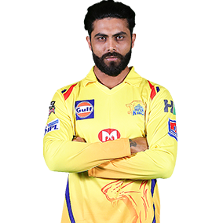

R Jadeja
Role : All-rounder
Batting Style : Left-handed
Bowling Style : Left-arm orthodox spin
Nationality : Indian
DOB : 06 December 1988
IPL Debut : 2008
The third retained player by CSK ahead of the IPL 2018 Player Auction, Ravindra Jadeja has been MS Dhoni’s go-to-man when he needed
to break a partnership and the left-armer has delivered the goods on many occasions. His presence gives Dhoni the extra cushion of
playing an additional batsman if needed.Jadeja has been an enigma right since his advent in international cricket. He was part of the
victorious Indian U-19 cricket team that won the World Cup in Malaysia in 2008. His performance in IPL 2008 helped Rajasthan Royals to
title victory and earned him the nickname "Rockstar" by his captain Shane Warne. In 2012 IPL player auction, Jadeja was bought by
Chennai Super Kings for approx. Rs. 9.8 Crore, making him the most expensive player of the year's auction. Jadeja has represented
the Gujarat Lions for two seasons and is now back with CSK for the eleventh edition of the league.